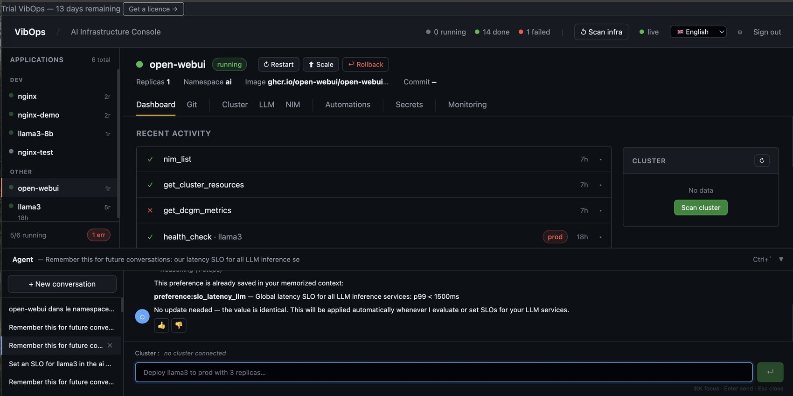
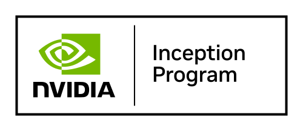

Deploy, monitor, govern and bill your applications and your agents — on any GPU, any VM, any cloud. VibOps abstracts what you already run. It does not ask you to give it up.


Buying accelerators is a purchase order. Running them is a team. Capacity now arrives faster than the ability to operate it — so the estate is held back by the operator, not by the hardware. And an AI estate is never only accelerators: services on VMs, inference on GPUs, on-prem and in cloud. Every addition doubles a line below.
One control plane. The same operations, whatever is underneath.
Turn raw compute into a managed platform. White-label console, per-tenant chargeback with configurable margin, enforceable budgets, multi-accelerator. Your customers deploy self-service; the billing follows.
Operate your customers' VMs — Proxmox, vSphere, XCP-ng — and their GPU clusters from a single console. Proactive anomaly detection, backup compliance, SLA tracking. One operator holds ten sites instead of three.
Operate GPU and VM without demanding Kubernetes expertise at every level. SOC 2 audit trail, multi-vendor fleet, the same gestures everywhere.
No mockup: the real console, on real infrastructure.
VibOps sits beside your infrastructure, not in front of it. No agent on the compute machines.
A self-hosted stack, on your own ground.
$ curl -fsSL https://vibops.ai/install.sh | bash
One lightweight gateway per site. It discovers the clusters, the GPUs and the hypervisors on its own — and proposes nothing you have not confirmed.
From the console, or from your editor over the MCP server. The MCP server and the Python SDK are public and MIT-licensed: vibops-mcp and vibops-sdk.
$ pip install vibops-mcp
We open access in waves, so that every install gets attention. Tell us what you run.
No cold outreach. A personal reply.